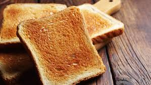

What have I got?
Never Give Up!
Hello. My name is Supakrit Khamhom. I'm 14 years old. I'm in M3 or Grade9.

A picture of toast
Toast is a simple yet versatile staple in many households across the globe. Essentially, it is bread that has been browned by exposure to radiant heat, usually in a toaster or under a broiler. The toasting process not only gives the bread a crispy texture but also enhances its flavor through caramelization of the sugars. Toast can serve as a blank canvas for a variety of toppings, ranging from the classic butter and jam to more elaborate options like avocado, eggs, or even smoked salmon. Whether enjoyed as a quick breakfast, a comforting snack, or part of a more elaborate meal, toast remains a beloved and timeless element of culinary traditions worldwide.